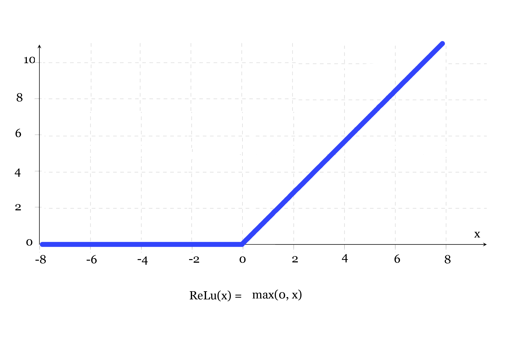

Convolutional Network
When it comes to image recognition and classification, Convolutional Neural Networks (CNN) have proven to be effective beyond explanation. They have been successful in identifying faces, animals, and a plethora of other objects. As a result, they have been the main driving force in robotic vision and self driving cars. CNNs are biologically-inspired models, they are loosely based on a theory of how mammals see the world around them using clustered neurons to recognise different features of an object in a layered and hierarchical manner. The design of CNNs was inspired by three features from the aforementioned theory of mammalian vision
- Local Connections - Each set of neurons in a cluster are connected to each other
- Layering - There is a hierarchy of features that are recognised
- Spatial Invariance - No matter the orientation of an object, it can still be detected
So how does it work?

Well as you can see, there are layers. Each of these layers represent a set of operations that is performed (e.g convolution, max-pooling, normalisation). Given some stimulus, a Receptive Field is created and iteratively moved across the image until the entire image has been covered. The receptive field demarks a section of the image on which operations will be applied.
A good way to think of of a CNN is to split it up into two parts Feature learning and Classification. For the feature learning part, three operations are applied over and over. These operations are; Convolution,
ReLu, and Pooling. Then once this is done, we move over to classification, where the output from the feature learning part is flattened into a smaller dimensional vector (flatten), then we connect all the neurons in one layer to the next (fully connected), and finally we squash our learnings into a set of probability values (softmax). The highest probability classification is the one that is chosen as the CNN’s “guess”.
In order to really get to grips with what is going in here we are going to break it down into eight steps:
- Preparation of images
- Convolution
- Normalisation (ReLu)
- Pooling
- Regularisation
- Flatten and Connect
- Probability conversion
- Selecting the most likely label
Step 1 - Preparation of images
Essentially every image is a matrix of pixel values.
The best way to think of an image, is as a 3D matrix [28,28,1] called the Input Volume. The first dimension is the length, the second is the width, and the third is the depth. What is the depth you might be wondering? Well, the depth represent the number of channels in the image. Conventional coloured images have three channels - red, green, and blue (RGB), each having pixels whose intensity values lie in the range 0 to 255.
A greyscale image however, like the one above and the ones we’ll be using, has just one channel. This channel is simply for light intensity, with the value of each pixel lying in the range 0 to 255 - zero indicating black and 255 indicating white.
Step 2 - Convolution
What is convolution? The best way to think of convolution is like a mathematical operation not dissimilar to addition or multiplication. In essence, it is where two sources of information are combined into one using many matrix multiplications . The first source of information is the input image (Blue) and the second source of information is the Kernel (Yellow). The output of the convolution is generally called a Feature map (convolved feature).
The actual combining of these two sources of information (convolution) is done by taking a section from the input image (receptive field) of equal dimension to that of the kernel (3 x 3), and performing a dot product operation on them. The result of this is one pixel of the feature map. Once a pixel has been computed, the center of the image section is shifted by some amount, called the “stride” value, and the computation is repeated. The computation ends once all pixels of the Feature map have been computed in this manner. This procedure is illustrated above.
Step 3 - Normalisation (ReLu in our case)
Normalisation is done in order to enable the model to learn non-linear functions. ReLu, Rectified Linear units, simply turns all negative numbers into zero.
Step 4 -Pooling
Pooling is simply a method for reducing the spatial dimensions (Width x Height) of the Input Volume. This is done to reduce computational complexity in the next Convolutional Layer. The transformation is performed by either taking the maximum value from the receptive field (called “max pooling”), or by taking an average of those values (called “average pooling”). Max pooling is favoured simply because it produces better results.
The colours show each time the receptive field has been applied on the image.
Step 5 - Regularisation
Regularisation refers to a broad range of techniques used in order to reduce overfitting. In oversimplified terms, overfitting is where your model has learned the characteristics and noise of the dataset it was trained on too intimately and as a result performs poorly at prediction and generalisation. Regularisation is an important step if we want our network to be able to accurately predict unseen data and be able to generalise beyond the data it has been trained on.
The regularisation technique we will use is called Dropout. It forces an artificial neural network to learn multiple independent representations of the same data by randomly disabling neurons in the learning phase. To perform Dropout on a layer, neurons on that layer are randomly set to zero during forward propagation.
Step 6 - Flatten and Connect
Once all the feature learning has been completed we “flatten” that output into a smaller dimensional vector, in order to make it more manageable, and then we apply a fully connected layer in which all neurons are connected to one another in order to harness all of the learnings that we have learned so far. The fully connected layer is important in order to get a better sense of the image as a whole as it combines all of the learned features into one, thus allowing us to classify the image based on the combination of our learned features.
Step 7 - Probability Conversion
In the final layer of our network, in order to convert the outputs into probabilities, we apply something called a Regression. One of two types of regression is used depending on the type of classification we want to perform. Logistic Regression is used for binary classification tasks (involving two groups) and Softmax Regression, the one we’ll use, for multi-class classification.
Step 8 - Choosing the most likely label
This step is the easiest step, we simply pick the label with the highest probability.
How does this network learn?
Imagine we pass an image of an eight through the network for the very first time and it produces a set of predictions. How can we gauge how good its prediction is? We do this by taking the output it produced and the output you wanted it to produce, and you calculate the squares of the differences between each component, this is called the cost. Calculating the cost of each of your thousands of training examples, summing them up and calculating the mean will give you the total cost of the network and is normally referred to as the cost function (loss function). The goal is to minimise our cost function. We do this by computing the negative gradient of our cost function and following it to the point where the cost is a minimum. Backpropagation is what we use to calculate the gradient of our cost function and it uses Gradient Descent in order to update our weights as we follow the negative gradient towards our minimum. There are three main variations of gradient descent:
- Batch Gradient Descent: Uses the cost function of entire training data set to make one update.
- Stochastic Gradient Descent: Performs a parameter update for each training example.
- Mini-batch Gradient Descent: Performs a parameter update for every mini-batch of n training examples.
Below is a simple representation of gradient descent.
Now we have covered the underlying conceptual elements relating to the structure and function of a Convolutional Neural Network, we will tie things off by covering some revelant codes and snippets.